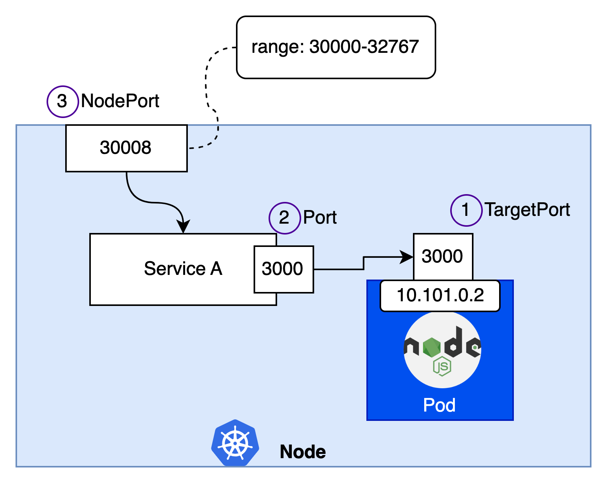
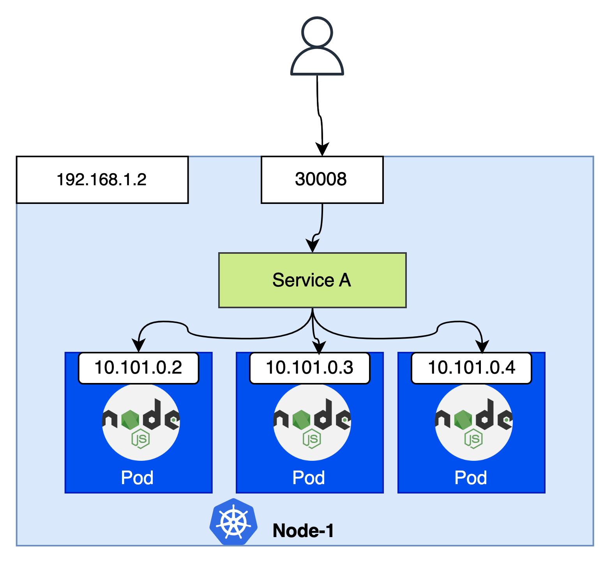
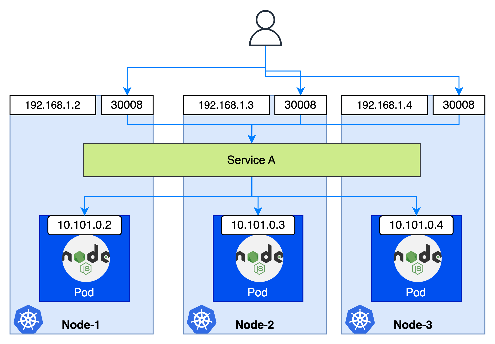
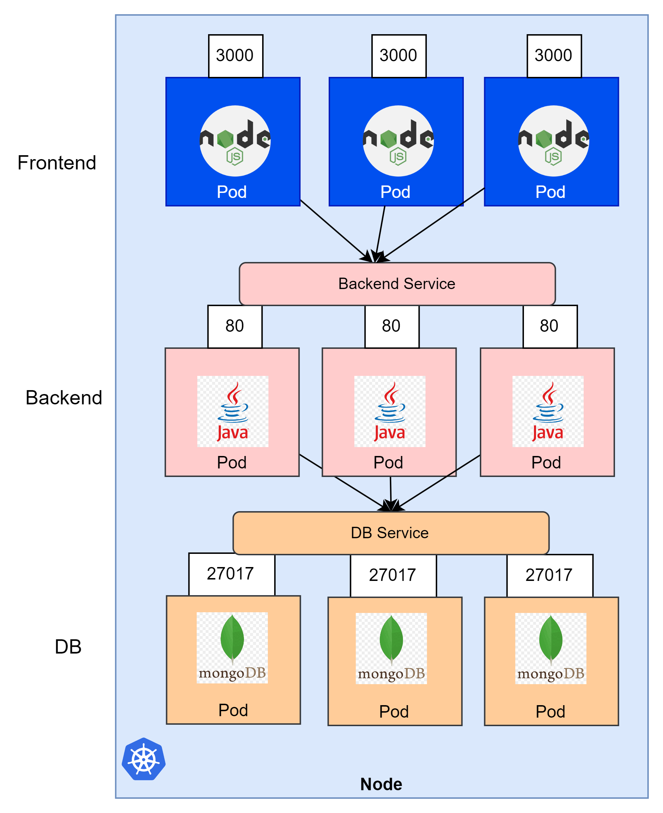
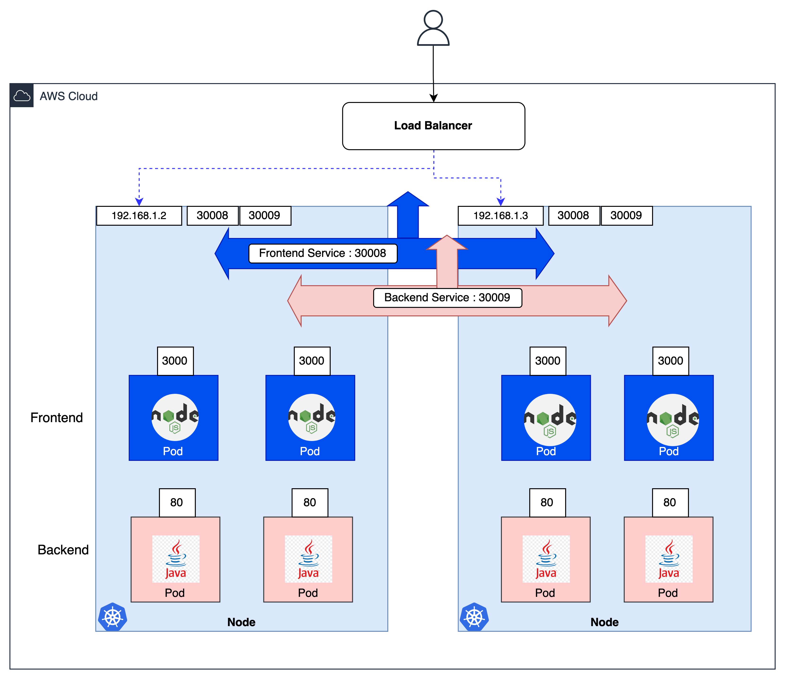

Client"] LB["

LoadBalancer"] SVC["Service
(selector: app=nginx)"] subgraph Pods["Các Pod"] P1["
Pod"]:::p P2["
Pod"]:::p P3["
Pod"]:::p end Client --> LB --> SVC --> Pods classDef p fill:#eef2ff,stroke:#8f0c9e,stroke-width:1px
Pod là tạm thời: khi chết và được tạo lại, Pod có IP mới. Vì vậy không thể "gọi thẳng" vào IP của Pod. Service là một khái niệm trừu tượng mô tả một tập hợp các Pod hoạt động cùng nhau như một dịch vụ, và cung cấp một điểm truy cập ổn định (IP/DNS cố định). Service chọn Pod bằng selector và điều hướng traffic, giúp bạn có High Availability và Load Balancing mà không cần biết chi tiết mạng hay vị trí của Pod.
selector: app: nginx để Service biết cần gửi traffic tới Pod nào.Client truy cập qua LoadBalancer → Service → Service dùng selector để điều hướng tới đúng các Pod (mỗi request tới một Pod khác nhau).
| Loại | Phạm vi truy cập | Dùng khi |
|---|---|---|
| ClusterIP (mặc định) | Chỉ trong cluster | Các Pod nội bộ giao tiếp với nhau (Frontend → Backend → DB). |
| NodePort | Qua cổng cố định trên mỗi node (30000–32767) | Cần truy cập dịch vụ từ ngoài cluster một cách đơn giản (môi trường dev/demo). |
| LoadBalancer | Qua LB công khai trên cloud | Expose dịch vụ ra Internet trong production. |
port: port của Service (nơi các thành phần khác gọi tới Service).targetPort: port mà Pod expose để nhận traffic. Nếu không chỉ định, mặc định bằng port.nodePort: (chỉ với NodePort) port mở trên node, range 30000–32767. Nếu không chỉ định sẽ được gán ngẫu nhiên trong range.
service-name. Ví dụ: Frontend cần một connection point tới Backend, Backend cần một connection point tới DB.


LoadBalancer là loại phức tạp nhất: Kubernetes cấp một địa chỉ IP công khai cho Service và nhờ cloud provider tạo một LoadBalancer (ví dụ AWS ALB/NLB) để điều hướng traffic tới Service. Cluster cần quyền (IAM Role) để thao tác với cloud. Trên AWS, LoadBalancer sẽ được hướng dẫn chi tiết trong chương EKS (Section 14).

targetPort cần được đặt name để phân biệt cổng của từng container.mongo-service ở namespace default được truy cập bằng mongo-service (hoặc mongo-service.default.svc.cluster.local).